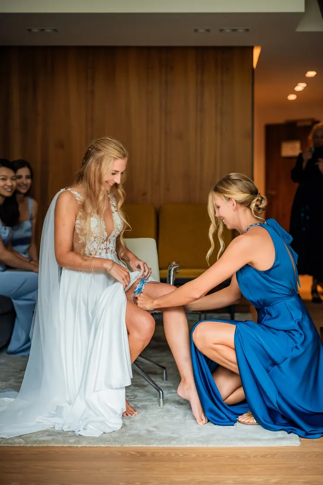
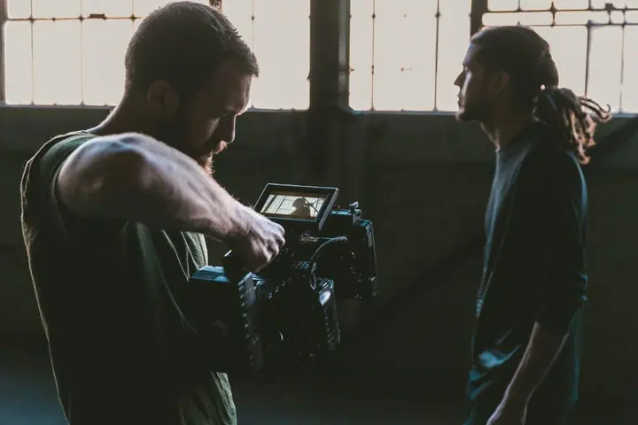

jedna
Svatby
Fotím velké celodenní svatby od ranních příprav po večerní párty i malé intimní svatby ve dvou nebo jen s nejbližšími. Vždy odevzdávám nejméně 400 fotek a na přání přidám i analogové fotografie nebo fotobudku.

Svatební fotograf a kameraman · Praha, celá ČR, Evropa

Jmenuji se Dominik Kučera, jsem fotograf a kameraman z Prahy a fotím a točím po celé Evropě. Nejraději jsem u velkých celodenních svateb i u malých obřadů jen ve dvou. Vedle svateb fotím reportáže a portréty a rád svoje know-how předávám dalším fotografům.
Více o mně
Co dělám
jedna
Fotím velké celodenní svatby od ranních příprav po večerní párty i malé intimní svatby ve dvou nebo jen s nejbližšími. Vždy odevzdávám nejméně 400 fotek a na přání přidám i analogové fotografie nebo fotobudku.
dvě
Jsem fotograf i kameraman, a tak spolu s focením můžu natočit i vaše svatební video. Fotky i film tak máte z jedné ruky.
tři
Fotím a točím konference, firemní akce, kampaně i oficiální portréty. Za reportážní sérii jsem získal 1. místo v Czech Press Photo.
Celodenní Wedding Masterclass, napůl teorie a napůl praxe s reálným párem, nebo čtyřhodinový mentoring 1:1. Určené jsou začínajícím i zkušeným fotografům.
Každá svatba je unikátní.


Za objektivem
S focením jsem začal na střední škole, nejdřív na kinofilmu. S digitální technikou přišly první zakázky a v roce 2012 jsem přešel na volnou nohu. První zakázku jsem fotil před 14 lety a čím déle fotím, tím radši tu práci mám.
Dokumentovat významné momenty v životech lidí je práce, kterou už za jinou vyměnit nechci. Fotil jsem lékařské mise MEDEVAC na Ukrajině, reportáže pro Ministerstvo vnitra i oficiální portréty. V lednu 2025 jsem získal 1. místo v Czech Press Photo v kategorii „Lidé, o kterých se mluví“.
Na svatbách nejsem jen za foťákem. Pomáhám s hladkým průběhem dne a zkušenosti z let focení jsem sepsal do Svatebního průvodce. Nejspokojenější jsem, když je spokojený můj klient.
Dominik
Ozvu se vám nejdéle do 48 hodin a pošlu detailní nabídku včetně cen a popisu mé práce.
Rád pomůžu s plánováním i harmonogramem dne. Hodit se vám bude i můj Svatební průvodce.
Vozím dva profesionální fotoaparáty, fotky bezpečně zálohuji a pomáhám, aby den plynul v klidu.
Do tří dnů od svatby dostanete první ukázky, hotové fotky pak do měsíce.
Portfolio
Fotografie jsou ilustrační
Otázky
Vždy odevzdávám nejméně 400 fotek, klidně jich ale může být i přes 1000. Pošlu vám všechno, co ve svatebním albu nesmí chybět.
Pár ukázek máte do tří dnů od svatby, hotové fotky do měsíce od svatebního dne.
Ano. Svatby fotím většinou v Čechách, na Moravě a ve střední Evropě, ale vyrazím za vámi i dál do světa.
Ano, spolu s focením natáčím i svatební video a fotím analogově. S kolegou Honzou máme také vintage fotobudku: 4 hodiny provozu a 200 tištěných fotek za 10 500 Kč.

Napište pár vět o tom, co si představujete. · +420 721 015 509